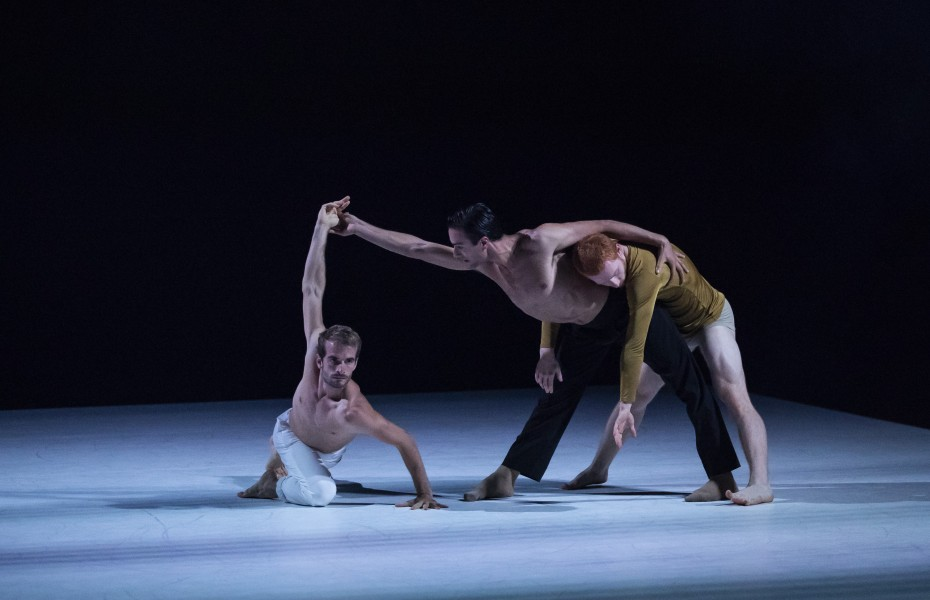

Proyectos
Parkour
Parkour is a training discipline using movement that developed from military obstacle course
training. Is an
activity that can be practiced alone or with others and is usually carried out in urban spaces,
though it can be
done anywhere.
Parkour involves seeing one's environment in a new way, and imagining the potential for navigating
it by
movement around, across, through, over and under its features.
Danza contempoarena
Contemporary dance is a genre of dance performance, although originally informed by and borrowing
from
classical, modern, and jazz styles.
In terms of the focus of its technique, contemporary dance tends to combine the strong but
controlled legwork of
ballet with modern that stresses on torso. It also employs contract-release, floor work, fall and
recovery, and
improvisation characteristics of modern dance. Unpredictable changes in rhythm, speed, and direction
are often
used, as well. Additionally, contemporary dance sometimes incorporates elements of non-western dance
cultures,
such as elements from African dance including bent knees, or movements from the Japanese
contemporary dance,
Butoh.

Pasiones
Parkour
Parkour is a training discipline using movement that developed from military obstacle course
training. Is an
activity that can be practiced alone or with others and is usually carried out in urban spaces,
though it can be
done anywhere.
Parkour involves seeing one's environment in a new way, and imagining the potential for navigating
it by
movement around, across, through, over and under its features.
Danza contempoarena
Contemporary dance is a genre of dance performance, although originally informed by and borrowing
from
classical, modern, and jazz styles.
In terms of the focus of its technique, contemporary dance tends to combine the strong but
controlled legwork of
ballet with modern that stresses on torso. It also employs contract-release, floor work, fall and
recovery, and
improvisation characteristics of modern dance. Unpredictable changes in rhythm, speed, and direction
are often
used, as well. Additionally, contemporary dance sometimes incorporates elements of non-western dance
cultures,
such as elements from African dance including bent knees, or movements from the Japanese
contemporary dance,
Butoh.
Preguntas
1 ¿Cuál es la diferencia entre Internet y la World Wide Web?
Respuesta p1
2 ¿Cuáles son las partes de un URL?
Respuesta p2
3 ¿Cuál es el propósito de los métodos HTTP: GET, HEAD, POST, PUT, PATCH, DELETE?
Respuesta p3
4 ¿Qué método HTTP se debe utilizar al enviar un formulario HTML, por ejemplo cuando ingresas tu usuario y contraseña en algún sitio? ¿Por qué?
Respuesta p4
5 ¿Qué método HTTP se utiliza cuando a través de un navegador web se accede a una página a través de un URL?
Respuesta p5
6 Un servidor web devuelve una respuesta HTTP con código 200. ¿Qué significa esto? ¿Ocurrió algún error?
Respuesta p6
7 ¿Es responsabilidad del desarrollador corregir un sitio web si un usuario reporta que intentó acceder al sitio y se encontró con un error 404? ¿Por qué?
Respuesta p7
8 ¿Es responsabilidad del desarrollador corregir un sitio web si un usuario reporta que intentó acceder al sitio y se encontró con un error 500? ¿Por qué?
Respuesta p8
9 ¿Qué significa que un atributo HTML5 esté depreciado o desaprobado (deprecated)? Menciona algunos elementos de HTML 4 que en HTML5 estén desaprobados.
HTML5 junta 3 tecnologias el css, javascript y se juntaron todas las etiquetas de presentacion se eliminan y se pasan a formar parte de css
10 ¿Cuáles son las diferencias principales entre HTML 4 y HTML5?
Respuesta p10
11 ¿Qué componentes de estructura y estilo tiene una tabla?
Respuesta p11
12 ¿Cuáles son los principales controles de una forma HTML5?
Respuesta p12
13 ¿Qué tanto soporte HTML5 tiene el navegador que utilizas?
Respuesta p13
Acerca de mi

Hola soy Julio de Jesús Ramírez Fernández y estudio sistemas computacionales, estoy en 6to semestre de la carrera programación en c, c# y Python, se lo básico de HTML, CSS, Bootstrap, en la parte no academia, bailo danza contemporánea, me gusta el cine y me intereso por temas de cambio climático, protección de datos, identidad de género, derechos humanos y la promover la movilidad social